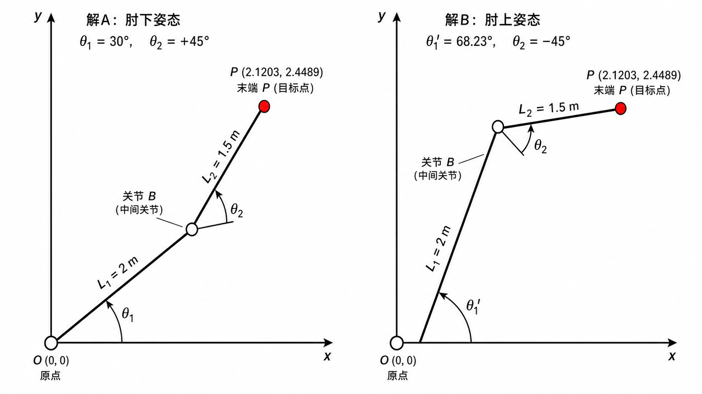
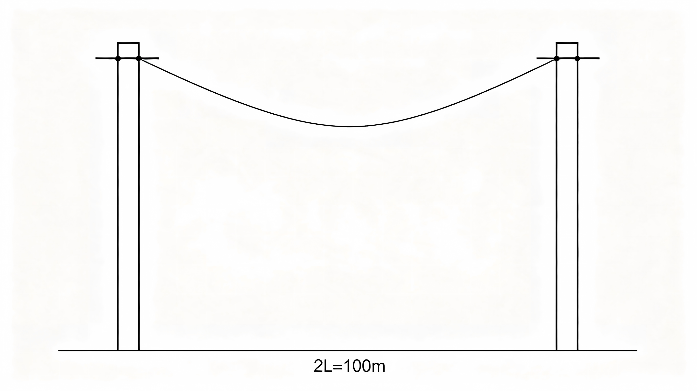

函数是高等数学研究的基本对象.本章从映射出发建立函数的严格概念，讨论函数的几种特性、反函数与复合函数、初等函数的构成，并补充双曲函数与极坐标，为后续极限与微积分奠定语言基础.
某市居民生活用电实行阶梯电价：第一档（月用电量 ≤ 260 度）每度 0.52 元；第二档（261–400 度）部分每度 0.57 元；超过 400 度的部分每度 0.79 元.
设月用电量为 \(t\) 度（单位：度），应缴电费为 \(p(t)\) 元.这个"用电量→电费"的对应关系可以用一个分段函数来表示：
\[p(t)=\begin{cases} 0.52t, & 0\leq t\leq 260,\\[4pt] 0.52\times 260+0.57(t-260)=135.2+0.57(t-260), & 260<t\leq 400,\\[4pt] 135.2+0.57\times 140+0.79(t-400)=214.8+0.79(t-400), & t>400. \end{cases}\]观察：
这个例子贯穿本章：§1.2 会用它讨论有界性和单调性；§1.3 会问"给定电费能否反推出用电量"（反函数问题）；学完导数后还可以算"边际电价"（多一度电多花多少钱）.先记住它，后面会反复回来.
中学里我们学过"变量 \(y\) 随变量 \(x\) 变化而变化"的朴素描述.现在用精确语言重新定义——这是全书的起点，后面所有概念（极限、导数、积分）都建立在它之上.
设 \(D\) 是一个非空实数集.若存在一个对应法则（规则）\(f\)，使得对 \(D\) 中每一个\(x\)，都有唯一确定的实数 \(y\) 与之对应，则称 \(f\) 为定义在 \(D\) 上的函数，记作
\[y=f(x),\quad x\in D,\]其中 \(x\) 称为自变量，\(y\) 称为因变量（或函数值），\(D\) 称为函数的定义域.全体函数值构成的集合
\[R_f=f(D)=\{\,f(x)\mid x\in D\,\}\]称为函数的值域.
符号要点：\(f\) 表示"规则"本身，\(f(x)\) 表示"把规则作用于 \(x\) 后得到的值".两者不同——就像"烤箱"和"烤出的面包"不是一回事.
同一个函数关系可以用不同方式表达：
考虑函数 \(f(x)=x^2\)（\(x\in\mathbb{R}\)），分别用三种方式呈现.
(1) 解析法（公式法）.\(y=x^2\)，\(x\in(-\infty,+\infty)\).最精确，适合推导和计算.
(2) 图像法.在坐标平面上描出点 \((x,x^2)\)，连成一条抛物线.直观展示整体形态（开口方向、对称性、增减趋势），是微积分中理解函数行为的首要工具.
(3) 表格法.列出有限个点的对应值：
| \(x\) | \(-2\) | \(-1\) | \(0\) | \(1\) | \(2\) |
|---|---|---|---|---|---|
| \(f(x)=x^2\) | \(4\) | \(1\) | \(0\) | \(1\) | \(4\) |
表格法适合离散数据（实验测量、统计样本），但无法给出完整信息.
注实际工程中三种方法常结合使用：公式建模 → 图像观察行为 → 表格记录采样数据.机器学习里的"模型训练"，本质上就是从大量表格数据（训练集）中反推一个近似公式（解析法）的过程.
求下列函数的自然定义域：
\[\text{(a)}\;f(x)=\dfrac{1}{x^2-1};\qquad\text{(b)}\;g(x)=\sqrt{x-2}+\ln(x+1);\qquad\text{(c)}\;h(x)=\arcsin\dfrac{x}{3}.\]解(a) 分母不能为零：\(x^2-1\neq0\)，即 \(x\neq\pm1\).故 \(D_f=\mathbb{R}\setminus\{-1,1\}=(-\infty,-1)\cup(-1,1)\cup(1,+\infty)\).
(b) 两项需同时有意义：根号内非负 \(x-2\ge0\Rightarrow x\ge2\)；对数真数正 \(x+1>0\Rightarrow x>-1\).取交集得 \(D_g=[2,+\infty)\).
(c) 反弦函数要求 \(|x/3|\le1\)，即 \(|x|\le3\).故 \(D_h=[-3,3]\).
求域口诀：分母!=0、偶根>=0、对数>0、\(\arcsin/\arccos\) 的 |内部|<=1、\(\tan\) 不在 \(\frac{\pi}{2}+k\pi\) 处.多条件时取各部分定义域的交集.
以下六类函数称为基本初等函数——它们是构建一切复杂函数的"原子".后续章节将逐一深入，这里先建立全局地图：
| 类型 | 一般形式 | 图像特征 | 典型应用场景 |
|---|---|---|---|
| 幂函数 | \(y=x^\alpha\;(\alpha\in\mathbb{R})\) | 过原点与否/奇偶性随指数变化 | 缩放变换、分形维度 |
| 指数函数 | \(y=a^x\;(a>0,a\neq1)\) | 过 \((0,1)\)\，单调 | 放射性衰变、人口增长、复利 |
| 对数函数 | \(y=\log_a x\;(a>0,a\neq1)\) | 过 \((1,0)\)\，与指数互为反函数 | 信息熵、算法复杂度、pH 值 |
| 三角函数 | \(\sin x,\;\cos x,\;\tan x,\;\dots\) | 周期性、有界、波动 | 交流电、声波、信号处理 |
| 反三角函数 | \(\arcsin x,\;\arccos x,\;\arctan x\) | 主值区间上有界单调 | 角度计算、逆映射 |
| 常数函数 | \(y=c\;(c\in\mathbb{R})\) | 水平直线 | 偏置项（bias）、基准线 |
自动驾驶定位（SLAM）常遇到这样的逆问题：已知激光雷达测得的若干个距离 \(d_i\)，要反推出自身在世界坐标系的位置 \((x,y)\).这恰好是"函数求逆".
更直观的例子是逻辑回归的逆变换.模型输出"是猫的概率" \(p=\sigma(z)\)，而分析师常要由 \(p\) 反推"对数几率" \(z\)：
\[z=\sigma^{-1}(p)=\ln\frac{p}{1-p}.\]具体计算：若模型给出 \(p=0.8\)，则
\[z=\ln\frac{0.8}{0.2}=\ln 4=1.3863.\]这个 \(\sigma^{-1}\) 叫 logit 函数，它把概率（有界于 \((0,1)\)）映射回整个实数轴，是逻辑回归与神经网络解释性的桥梁.正函数描述"输入→输出"，反函数描述"结果→原因"，两者一体两面.
设 \(y=f(x)\) 是 \(D_f\) 到 \(R_f\) 的一一对应（严格单调即可保证）.由 \(y=f(x)\) 解出 \(x=\varphi(y)\)，这个以 \(y\) 为自变量、\(x\) 为因变量的函数称为 \(f\) 的反函数，记作 \(x=f^{-1}(y)\).
习惯上仍用 \(x\) 表示自变量，故常写作 \(y=f^{-1}(x)\).其定义域为 \(R_f\)，值域为 \(D_f\).
求 \(f(x)=2x+1\) 的反函数，并验证 \(f^{-1}\bigl(f(x)\bigr)=x\).
解由 \(y=2x+1\) 解出 \(x=\dfrac{y-1}{2}\)，互换字母得 \(f^{-1}(x)=\dfrac{x-1}{2}\).
验证：\(f^{-1}\bigl(f(x)\bigr)=f^{-1}(2x+1)=\dfrac{(2x+1)-1}{2}=x\).✓
证明 \(\sigma(x)=\dfrac{1}{1+\mathrm{e}^{-x}}\) 与 \(\mathrm{logit}(p)=\ln\dfrac{p}{1-p}\) 互为反函数.
解令 \(p=\dfrac{1}{1+\mathrm{e}^{-x}}\)，解 \(x\)：
\[1+\mathrm{e}^{-x}=\frac{1}{p}\;\Rightarrow\;\mathrm{e}^{-x}=\frac{1-p}{p}\;\Rightarrow\;-x=\ln\frac{1-p}{p}=\ln\frac{p}{1-p}\;\Rightarrow\;x=\ln\frac{p}{1-p}=\mathrm{logit}(p).\]故 \(\sigma^{-1}=\mathrm{logit}\)，互逆成立.
训练神经网络时，我们盯着一条曲线——损失函数 \(L(w)\) 随迭代轮次 \(k\) 的变化.理想情况下它单调下降并趋于平缓.
下面是一段模拟训练日志（学习率 \(\eta=0.1\)，共 6 轮）：
| 轮次 \(k\) | 0 | 1 | 2 | 3 | 4 | 5 |
|---|---|---|---|---|---|---|
| 损失 \(L_k\) | 2.301 | 1.842 | 1.503 | 1.267 | 1.109 | 1.001 |
设 \(f(x)\) 在区间 \(I\) 上有定义.若对 \(I\) 上任意 \(x_1<x_2\)，恒有 \(f(x_1)<f(x_2)\)（或 \(f(x_1)>f(x_2)\)），则称 \(f\) 在 \(I\) 上严格单调增加（或严格单调减少）.把不等号放宽为 \(\le\) 或 \(\ge\)，则得单调不减/单调不增.
判断 \(f(x)=x^3-3x\) 在何处单调.
解求导（第 3 章工具，此处先用定义验证一点）：考察 \(x_1<x_2\) 时差值
\[f(x_2)-f(x_1)=(x_2^3-x_1^3)-3(x_2-x_1)=(x_2-x_1)(x_2^2+x_1x_2+x_1^2-3).\]当 \(x_1,x_2\in(-\infty,-1)\) 或 \((1,+\infty)\) 时，\(x_2^2+x_1x_2+x_1^2>3\)，差为正，单调增；当 \(x_1,x_2\in(-1,1)\) 时该式 <3，差为负，单调减.故 \(f\) 在 \((-\infty,-1]\)、\([1,+\infty)\) 增，在 \([-1,1]\) 减.
设 \(D_f\) 关于原点对称.若对一切 \(x\in D_f\) 有 \(f(-x)=f(x)\)，称 偶函数（图像关于 \(y\) 轴对称）；若 \(f(-x)=-f(x)\)，称 奇函数（图像关于原点对称）.
判断常用激活函数的奇偶：\(\text{(a)}\;\sigma(x)=\dfrac{1}{1+\mathrm{e}^{-x}}\)（Sigmoid）；\(\text{(b)}\;\tanh x\)；\(\text{(c)}\;\mathrm{ReLU}(x)=\max\{x,0\}\).
解(a) \(\sigma(-x)=\dfrac{1}{1+\mathrm{e}^{x}}\)，而 \(\sigma(x)+\sigma(-x)=\dfrac{1}{1+\mathrm{e}^{-x}}+\dfrac{1}{1+\mathrm{e}^{x}}=1\)，即 \(\sigma(-x)=1-\sigma(x)\)，非奇非偶.
(b) \(\tanh(-x)=\dfrac{\mathrm{e}^{-x}-\mathrm{e}^{x}}{\mathrm{e}^{-x}+\mathrm{e}^{x}}=-\tanh x\)，奇函数.其输出零中心化（在 \([-1,1]\)），这是它比 Sigmoid 更适合深层网络的原因之一.
(c) \(\mathrm{ReLU}(-1)=0\)，\(\mathrm{ReLU}(1)=1\)，既不满足偶也不满足奇，非奇非偶（但它是单调增的）.
周期：若存在 \(T eq0\) 使 \(f(x+T)=f(x)\) 对一切 \(x\) 成立，则称 \(f\) 为周期函数，最小的正数 \(T\) 为周期.
有界：若存在 \(M>0\) 使 \(|f(x)|\le M\) 对一切 \(x\in D_f\) 成立，则称 \(f\) 在 \(D_f\) 上有界.
毫米波雷达接收的调频回波信号可建模为 \(s(t)=A\sin(2\pi f t+\varphi)\).求其周期与有界范围.
解由正弦周期性，\(s(t+T)=s(t)\) 当且仅当 \(2\pi f T=2\pi\)，故周期 \(T=\dfrac{1}{f}\).又 \(|\sin(\cdot)|\le1\)，故 \(|s(t)|\le A\)，即信号有界于 \([-A,A]\).这就是"调幅"的含义——信息藏在 \(A\)、\(f\)、\(\varphi\) 里，而幅度永远不超过 \(A\).
以 Sigmoid 激活函数 \(\sigma(x)=\dfrac{1}{1+\mathrm{e}^{-x}}\) 为例，学完导数后会发现它的导数有一个漂亮的自指性质：
\[\sigma'(x)=\sigma(x)\bigl(1-\sigma(x)\bigr).\]这意味着：当 \(\sigma(x)\approx 0\) 或 \(\sigma(x)\approx 1\)（即神经元"已确定"输出接近 0 或 1）时，\(\sigma'(x)\approx 0\)，梯度消失——这就是梯度消失问题的根源之一.而 \(\sigma(0)=0.5\) 时导数取最大值 \(0.25\)，信息流动最快.
提示：上式的推导需要链式法则（§3.2），目前只需直观理解——导数大则"敏感"，导数小则"麻木".十层网络中每层都在"饱和区"的话，信号衰减为 \((1/4)^{10}\approx 9.5\times10^{-7}\)——几乎归零.这就是深度网络需要 ReLU（正区导数恒为 1）或残差连接的原因.
背景故事：2023 年夏天，某国产 L4 自动驾驶公司在上海嘉定的封闭测试场上遇到了一个看似简单却折磨了团队两个月的问题：当车辆以巡航模式跟车时，车速总是在目标值上下 ±3 km/h 波动，乘客投诉「像新手司机在练油门」.
问题的根因藏在一张「油门开度 → 稳态车速」的标定表里.底盘工程师在台架上实测了不同油门开度下的稳态车速，数据可以用一个一阶饱和指数模型拟合：
\[v(u)=v_{\max}\Bigl(1-\mathrm{e}^{-u/u_{0}}\Bigr),\qquad v_{\max}=110\ \mathrm{km/h},\quad u_{0}=55.\]| 油门开度 $u$ /% | 0 | 10 | 20 | 30 | 40 | 50 | 60 | 80 | 100 |
|---|---|---|---|---|---|---|---|---|---|
| 车速 $v(u)$ /(km/h) | 0.0 | 18.3 | 33.5 | 46.2 | 56.8 | 65.8 | 73.0 | 84.3 | 92.2 |
这张表就是函数 $v(u)$ 的离散版本.但控制算法需要的恰恰是它的反函数：「我想让车保持 60 km/h 巡航，该给多少油门？」由 $v=60$ 反解：
\[1-\frac{60}{110}=\mathrm{e}^{-u/55}\quad\Rightarrow\quad u=-55\ln\frac{50}{110}\approx 43.4\,\%.\]这个反解之所以可行，核心原因是 $v(u)$ 严格单调递增——油门越大、车速越快，永远不会有「两个不同的油门开出相同车速」的情况.这就是反函数存在的实际意义：严格单调保证了可逆性.
但真正让工程师头疼的是以下三个数学细节：
① 有界性限制工作区间：因为 $\mathrm{e}^{-u/55}>0$ 恒成立，所以 $v(u)<110$ 永远为真.即使把油门踩到底（100%），车速也只能到 92.2 km/h.这意味着单纯靠油门无法达到 110 km/h 以上的高速——高速巡航必须配合降档或电机弱磁控制.
② 灵敏度衰减导致高速段「脚感发虚」：低开度区（如 $u=40\\to41$）每增加 1% 油门，车速提升约 1.0 km/h；但在高开度区（$u=80\\to81$），同样 1% 的油门变化只带来约 0.5 km/h 的增速.这就是为什么你在高速上「踩了没反应」——控制器必须在高速段提高增益来补偿这种衰减.
③ 非单调是控制振荡的根源：如果实测标定数据出现非单调（比如因传动系齿轮间隙导致 $v(45)>v(46)$），则反查表会产生歧义——同一个目标速度对应两个不同的油门值，控制算法会在两者之间反复跳变.该 L4 公司最终发现正是某组减速箱数据存在微小回差，导致了 ±3 km/h 的振荡.
工程结论：一张简单的油门-速度标定表，背后是三个数学性质的工程落地：严格单调性保证反函数存在（可反查）、有界性决定有效工作区间、导数（灵敏度）衰减指导增益调度.百度 Apollo、小鹏 XNGP、华为 ADS 的纵向控制模块里，都在用同样的数学原理.学生将来无论从事自动驾驶、工业控制还是机器人开发，都会反复遇到这类「正函数建模 + 反函数求解」的问题.
±3 km/h 的跟车振荡，追到底是一段不严格单调的标定数据——\(v(u)\) 一旦失去可逆性，同一目标车速对应两个油门，控制器只能在两个解之间反复跳变.国产 L4 从测试场走向量产，单调性校验正是每张标定表上车前的第一道数学安检.
设 \(y=f(u)\) 的定义域为 \(D_f\)，\(u=g(x)\) 的值域为 \(R_g\).若 \(R_g\cap D_f eq\varnothing\)，则把 \(u=g(x)\) 代入 \(y=f(u)\) 得到的
\[y=f\bigl[g(x)\bigr]\]称为由 \(f\) 与 \(g\) 复合而成的复合函数，其中 \(u\) 称为中间变量.
设 \(f(x)=\sqrt{x}\)，\(g(x)=x^2-1\)，求 \(f\circ g\)、\(g\circ f\) 及其定义域.
解\((f\circ g)(x)=f(g(x))=\sqrt{x^2-1}\)，要求 \(x^2-1\ge0\Rightarrow |x|\ge1\)，即定义域 \((-\infty,-1]\cup[1,+\infty)\).
\((g\circ f)(x)=g(f(x))=(\sqrt{x})^2-1=x-1\)，由 \(f\) 的定义域要求 \(x\ge0\)，故定义域 \([0,+\infty)\).
注意顺序：一般 \(f\circ g eq g\circ f\).顺序不同，结果和定义域都不同.
一个 3 层全连接网络的输出是
\[y=\sigma_3\bigl(W_3\,\sigma_2(W_2\,\sigma_1(W_1x+b_1)+b_2)+b_3\bigr).\]这纯粹是复合函数 \(f_3\circ f_2\circ f_1\) 的嵌套，每层 \(f_k(z)=\sigma_k(W_k z+b_k)\).整个网络就是一个由线性函数（\(Wz+b\)）与激活函数（\(\sigma_k\)）交替复合而成的"超级函数".
那么"训练"在做什么？给定输入 \(x\)，输出 \(y\) 与真值 \(\hat y\) 的误差 \(E\)，我们要调整参数让 \(E\) 最小.如何知道该往哪个方向调每个 \(W_k\)？——答案是对复合函数求偏导，按链式法则从输出层往输入层一层层传回去.这就是反向传播，它将在第 3 章（导数与微分）之后才能严格展开.
一句话：本章的函数复合，就是第 3 章求导、第 8 章多元微分、乃至整本深度学习数学基础的语言预备.
背景故事：在深圳龙华的某电子厂流水线上，一台国产六轴机械臂正在以每分钟 12 次的频率抓取 PCB 板并放置到测试夹具中.操作员在示教器上设定了目标位置 $(x, y) = (400\ \mathrm{mm},\ 300\ \mathrm{mm})$，但一个让新手工程师困惑的问题是：机械臂的控制器是如何知道每个关节应该转到多少度的？

这就是逆运动学（Inverse Kinematics）问题——已知末端执行器的目标位置，反求各关节角度.对于最简单的两连杆平面机械臂（许多教学机器人、协作机器人的核心简化模型），正运动学方程为：
\[\begin{cases} x = L_1\cos\theta_1 + L_2\cos(\theta_1+\theta_2) \\ y = L_1\sin\theta_1 + L_2\sin(\theta_1+\theta_2) \end{cases}\]其中 $L_1, L_2$ 为两段连杆长度，$\theta_1, \theta_2$ 为关节角.给定 $(x,y)$ 反解 $\theta_1, \theta_2$ 需要用到余弦定理和三角恒等变换，最终得到：
\[\cos\theta_2=\frac{x^2+y^2-L_1^2-L_2^2}{2L_1L_2},\qquad \theta_1=\arctan2(y,x)-\arctan2\left(L_2\sin\theta_2,\ L_1+L_2\cos\theta_2\right).\]注意 $\cos\theta_2$ 的值确定后，$\theta_2$ 有两个解：$\theta_2=\pm\arccos(\cdots)$.正对应「肘部向上」姿态，负对应「肘部向下」姿态.这两种解都能到达同一个目标点！这就是为什么六轴工业机器人通常有 8 组解（最多可达 16 组），控制器需要根据避障、关节限位、路径平滑度等约束选择最优的一组.
这个「多解」现象在中国机器人产业中有非常实际的工程意义：
① 工作空间边界：当 $x^2+y^2 > (L_1+L_2)^2$ 时，目标超出臂展范围，$\cos\theta_2 > 1$，无实数解——数学上的「定义域限制」对应物理上的「够不着」.
② 奇异姿态：当 $x^2+y^2 = |L_1-L_2|$ 时，两连杆完全伸直或完全折叠，$\theta_2=0$ 或 $\pi$，此时机械臂失去一个自由度（沿圆弧方向无法移动）.这对应着数学上的雅可比矩阵秩亏.
③ 解的选择策略：汇川、埃斯顿、新松等国产机器人厂商的算法通常优先选择「肘部向下」解（能耗更低、更稳定），除非与障碍物碰撞检测冲突.
工程结论：逆运动学的本质是求解非线性方程组，「多解」是这类问题的固有特征.理解这一点对从事机器人、计算机图形学（骨骼动画）、甚至外科手术机器人（达芬奇手术臂有 7 个自由度，解空间更复杂）都至关重要.中国已成为全球最大的工业机器人市场，但核心的轨迹规划算法仍在追赶国际领先水平——而这恰恰建立在本科阶段的三角函数和反函数知识之上.
同一个抓取点对应「肘上」「肘下」两组关节角，根源在 \(\theta_2=\pm\arccos(\cdots)\) 的反函数多值——汇川、埃斯顿、新松默认选「肘下」解，赌的是能耗更低、运动更稳.全球最大工业机器人市场想长出核心算法，先得把这个 \(\pm\) 号算清、选对.
场景：SoC 过温保护用热敏电阻（NTC）测板温，信号链是一条复合函数：温度 \(T\to\) 阻值 \(R\to\) 分压 \(V\to\) ADC 码 \(N\)，三段分别是
\[R(T)=R_0\,\mathrm{e}^{B\left(\frac{1}{T}-\frac{1}{T_0}\right)},\qquad V(R)=V_{cc}\frac{R}{R+R_f},\qquad N(V)=4095\frac{V}{V_{cc}}.\]| 参数 | 符号 | 取值 |
|---|---|---|
| 标称阻值 \(R_0\) / 参考温度 \(T_0\) | \(R_0,T_0\) | \(10\ \mathrm{k\Omega}\)，\(T_0=298.15\ \mathrm{K}\) |
| 材料常数 | \(B\) | \(3950\ \mathrm{K}\) |
| 上拉电阻 | \(R_f\) | \(10\ \mathrm{k\Omega}\) |
合并得 \(N=4095\dfrac{R}{R+R_f}\).测得 \(N=1500\)：由 \(\dfrac{R}{R+10000}=\dfrac{1500}{4095}=0.36630\) 得 \(R=5780.7\ \Omega\)；再由 \(\dfrac{1}{T}=\dfrac{1}{298.15}+\dfrac{1}{3950}\ln\dfrac{5780.7}{10000}=0.00335402-0.00013878=0.00321524\) 得 \(T=311.02\ \mathrm{K}=37.87\,{}^{\circ}\mathrm{C}\).反过来定阈值：过温降频点取 \(85\,{}^{\circ}\mathrm{C}\)（\(358.15\ \mathrm{K}\)），\(\ln\dfrac{R}{10000}=3950\times(-0.00056189)=-2.21947\)，\(R=1086.6\ \Omega\)，对应 \(N=4095\times\dfrac{1086.6}{11086.6}=401.4\).
工程结论：链路每一环（指数、分式、线性）都严格单调，复合后 \(N\) 关于 \(T\) 严格单调递减，故整体一一对应、反函数存在——这是「由码值唯一确定温度」的数学前提.更妙的是：既然反函数唯一，固件不必在中断里实时算对数，只需离线把 \(85\,{}^{\circ}\mathrm{C}\) 反算成整数阈值 \(401\)，运行时比较 \(N\le 401\) 即触发降频，省下每次数百个时钟周期的浮点运算.
一台平面两连杆机械臂，大臂长 \(L_1\)、小臂长 \(L_2\)，关节角分别为 \(\theta_1,\theta_2\).末端（手爪）位置是关节角的函数：
\[\begin{cases}x=L_1\cos\theta_1+L_2\cos(\theta_1+\theta_2),\\ y=L_1\sin\theta_1+L_2\sin(\theta_1+\theta_2).\end{cases}\]具体代入计算：取 \(L_1=2\,\mathrm{m},\;L_2=1.5\,\mathrm{m},\;\theta_1=30^\circ,\;\theta_2=45^\circ\).
\[\theta_1=30^\circ\Rightarrow\cos\theta_1=0.8660,\ \sin\theta_1=0.5000;\] \[\theta_1+\theta_2=75^\circ\Rightarrow\cos75^\circ=0.2588,\ \sin75^\circ=0.9659.\] \[x=2\times0.8660+1.5\times0.2588=1.7321+0.3882=2.1203\ \mathrm{m},\] \[y=2\times0.5000+1.5\times0.9659=1.0000+1.4489=2.4489\ \mathrm{m}.\]即手爪落在 \((2.12,\,2.45)\) 米处.这个公式只由常量、加乘、正弦余弦构成——它正是典型的初等函数.机器人运动学、计算机图形学的变换矩阵，本质都是初等函数的组合.
以下六类称为基本初等函数，是整个微积分的"字母表"：
| 类别 | 代表 | 要点 |
|---|---|---|
| 幂函数 | \(y=x^\mu\)（\(\mu\) 常数） | \(\mu\) 不同图像迥异 |
| 指数函数 | \(y=a^x\;(a>0,a eq1)\) | \(y=\mathrm{e}^x\) 最常用；单调 |
| 对数函数 | \(y=\log_a x\) | \(\ln x\) 为自然对数；与指数互逆 |
| 三角函数 | \(\sin x,\cos x,\tan x\) | 周期 \(2\pi\)（\(\tan\) 为 \(\pi\)） |
| 反三角函数 | \(\arcsin x,\arctan x\) 等 | 多值经截段后得主值 |
| 常数函数 | \(y=C\) | 最特殊的初等函数 |
由基本初等函数经过有限次四则运算与有限次复合，并且能用一个解析式表示的函数，称为初等函数.
某芯片算力按 \(C(t)=C_0\cdot 2^{t/T}\) 增长（\(T\) 为翻倍周期）.取对数后说明其线性特征，并代具体数.
解两边取自然对数：
\[\ln C(t)=\ln C_0+\frac{t}{T}\ln 2=\ln C_0+\left(\frac{\ln 2}{T}\right)t.\]即 \(\ln C\) 关于 \(t\) 是线性的（斜率 \(\frac{\ln2}{T}\)）.取 \(C_0=1\)（单位算力）、\(T=2\) 年，则
\[C(6)=2^{6/2}=2^3=8,\qquad \ln C(6)=\frac{6}{2}\ln2=3\ln2\approx2.079.\]6 年算力翻 3 番达 8 倍——这正是"摩尔定律"类指数增长的数学表达，也是"复合+对数"协作把非线性化为线性的经典范例.
深夜两点，你训练的手写数字识别模型在验证集上卡在 91% 上不去，同事丢来一句"把激活函数换一个试试".你这才认真打量这个一直被当黑箱的东西——每一个激活函数，都只是基本初等函数通过四则运算和复合搭出来的.逐个拆解：
| 激活函数 | 表达式 | 用到哪些基本初等函数 |
|---|---|---|
| Sigmoid | \(\sigma(x)=\dfrac{1}{1+\mathrm{e}^{-x}}\) | 常数 + 指数 \(\mathrm{e}^{-x}\) + 加法 + 倒数（四次复合） |
| Tanh | \(\tanh x=\dfrac{\mathrm{e}^x-\mathrm{e}^{-x}}{\mathrm{e}^x+\mathrm{e}^{-x}}\) | 指数 + 减法 + 加法 + 除法（注意它就是双曲正切！） |
| Softmax | \(\dfrac{\mathrm{e}^{z_i}}{\sum_j \mathrm{e}^{z_j}}\) | 指数 + 求和 + 除法（用于多分类概率输出） |
| GELU / Swish | \(x\cdot\sigma(x)\) / \(\dfrac{x}{1+\mathrm{e}^{-x}}\) | 恒等 × Sigmoid，仍是初等函数的复合 |
| ReLU | \(\max\{x,0\}\) | ⚠ 分段函数，严格来说不是初等函数（但因为它简单高效，实际中最常用） |
为什么这很重要？当你学到链式法则（第三章）时，需要对这些激活函数求导.因为它们都是初等函数的组合，求导只需要反复套用基本公式——不需要任何新工具.这就是为什么我们要先把基本初等函数"认全"：它们是后续所有计算的原子.
从手写数字识别（1980 年代 LeNet）到 ChatGPT（2020 年代 GPT），架构从 5 层涨到 96 层，但每一层核心运算始终是：矩阵乘法（多项式）+ 激活函数（初等函数组合）.基本初等函数就是整个 AI 的"零件清单"
背景故事：2020 年，中国 5G 建设进入高峰期.某运营商的网络规划工程师小张接到一个任务：在一条 15 km 的城郊主干道两侧规划基站覆盖.他手头的数据是：发射功率 40 dBm、天线增益 16 dBi、馈线损耗 3 dB、空中路径损耗（按 COST-HATA 模型）约 125 dB、接收灵敏度 -100 dBm.
如果用线性倍数计算：$10^{(40/10)}=10000$ mW 发射，乘以天线增益 $10^{(16/10)}\approx39.8$，除以馈线损耗 $10^{(3/10)}\approx2.0$，再除以路径损耗 $10^{(125/0)}\approx3.16\times10^{12}$……数字大到让人头晕，而且一旦某个参数变了（比如换了一根更长的馈线），整个连乘积要重算.
但如果换成 dB（分贝）域，一切都变成了加减法：
\[P_{\text{rx}} = P_{\text{tx}} + G_{\text{tx}} - L_{\text{feed}} - L_{\text{path}} = 40 + 16 - 3 - 125 = -72\ \mathrm{dBm}.\]接收电平 $-72$ dBm 比灵敏度 $-100$ dBm 高出 28 dB 的余量——覆盖可靠！这就是为什么全世界的射频工程师都「说 dB 不说瓦特」.背后的数学原理正是对数函数把乘法变成加法：
\[\log_{10}(A\times B)=\log_{10}A+\log_{10}B,\qquad \log_{10}\frac{A}{B}=\log_{10}A-\log_{10}B.\]| 链路环节 | 线性值 | dB 值 |
|---|---|---|
| 发射功率 | $10\ \mathrm{W}$ | $40\ \mathrm{dBm}$ |
| 天线增益 | $\times39.8$ | $+16\ \mathrm{dBi}$ |
| 馈线损耗 | $\div2.00$ | $-3\ \mathrm{dB}$ |
| 路径损耗 (15km, 3.5GHz) | $\div3.16\times10^{12}$ | $-125\ \mathrm{dB}$ |
| 接收电平 | $\mathbf{1.25\times10^{-10}\ W}$ | $\mathbf{-72\ dBm}$ |
对数变换的优势不仅是简化计算，更重要的是：动态范围的压缩.人耳能感知的声音强度范围约为 $10^{12}:1$（120 dB），人眼能感知的光强范围更大.对数压缩后，这些巨大的线性范围被映射到可管理的数值区间内.在通信系统中，从发射功率 $10^4$ mW 到接收灵敏度 $10^{-13}$ W，跨度达到 $10^{17}$ 量级——只有在对数域下才能同时看清大信号和小信号.
还有两个工程细节值得注意：
① 距离翻倍的「6dB 法则」：自由空间路径损耗与距离平方成正比（$L_p\propto d^2$）.距离翻倍 → 功率降至 1/4 → 降低 $10\lg4\approx6$ dB.这个经验法则被射频工程师天天使用：「每翻一倍距离，信号弱 6 dB」.
② 频率升高的代价：路径损耗还与频率平方成正比（$L_p\propto f^2$）.从 900 MHz（2G）到 3.5 GHz（5G Sub-6G），频率升高约 4 倍，路径损耗增加 $10\lg16\approx12$ dB——这就是为什么 5G 需要更密集的基站部署.
工程结论：对数函数在通信工程中的核心价值是：(1) 将连乘/连除变为加减运算；(2) 压缩巨大的动态范围；(3) 提供直观的「每翻倍 X dB」经验规则.华为、中兴的 5G 网规工具内部的核心算法就是一套基于对数的链路预算计算器.学生将来无论是做通信、音频处理还是地震勘探，都会遇到「先取对数再做线性运算」的模式.
发射功率到接收灵敏度横跨 \(10^{17}\) 量级，被对数压缩成一个 \(-72\) dBm 和 28 dB 的余量——「覆盖可靠」的底气就来自这套乘除变加减的链路预算.华为、中兴的 5G 网规工具能铺到每一座基站，底层正是这个简单的对数法则.
链路预算公式（dB 域）：\(P_{\text{rx}} = P_{\text{tx}} + G - L_{\text{feed}} - L_{\text{path}}\)
在 LSTM、GRU 乃至早期 Transformer 的门控单元里，无处不在地出现双曲正切：
\[h_t=\tanh(Wx_t+Uh_{t-1}+b).\]为什么是 \(\tanh\) 而不是别的函数？因为 \(\tanh x=\dfrac{\mathrm{e}^{x}-\mathrm{e}^{-x}}{\mathrm{e}^{x}+\mathrm{e}^{-x}}\) 具备两个珍贵性质：①有界于 \((-1,1)\)，数值稳定；②奇函数（零中心化），缓解偏移.具体算几个值感受一下：
\[\tanh 1=\frac{\mathrm{e}-\mathrm{e}^{-1}}{\mathrm{e}+\mathrm{e}^{-1}}=\frac{2.71828-0.36788}{2.71828+0.36788}=\frac{2.35040}{3.08616}=0.7616,\] \[\tanh 2=\frac{\mathrm{e}^{2}-\mathrm{e}^{-2}}{\mathrm{e}^{2}+\mathrm{e}^{-2}}=\frac{7.38906-0.13534}{7.38906+0.13534}=\frac{7.25372}{7.52440}=0.9640,\]可见输入翻倍，输出从 \(0.76\) 升到 \(0.96\)，趋近上界 \(1\) 但永不越过——这正是"饱和"特性，用来做门控（开/关）再合适不过.
激光雷达每一束回波天然记录的是 极径 \(r\)（距离）与 极角 \(\theta\)（方位），即极坐标 \((r,\theta)\).把它换算成直角坐标系：
\[x=r\cos\theta,\qquad y=r\sin\theta.\]若某回波 \(r=30\,\mathrm{m},\;\theta=60^\circ\)，则
\[x=30\cos60^\circ=30\times0.5=15.0,\quad y=30\sin60^\circ=30\times0.8660=25.98.\]即该障碍物落在直角坐标 \((15.0,\,25.98)\) 米处.无人驾驶感知模块的"极坐标栅格地图"，正是用 \((r,\theta)\) 直接组织数据，与传感器最匹配.
场景： 车载雷达的原生输出即极坐标 \((r,\theta)\).感知模块据此划出极坐标栅格，每个分辨单元是扇形微元，面积 \(\Delta A\approx r\,\Delta\theta\,\Delta r\).
| 参数 | 符号 | 取值 |
|---|---|---|
| 角分辨率 | \(\Delta\theta\) | \(0.2^{\circ}=3.491\times10^{-3}\ \mathrm{rad}\) |
| 距离分辨率 | \(\Delta r=c/(2B)\) | \(0.60\ \mathrm{m}\)（\(B=250\ \mathrm{MHz}\)） |
| 探测半径 | \(r_{\max}\) | \(200\ \mathrm{m}\) |
横向分辨尺寸 \(r\Delta\theta\)：\(r=20,100,200\ \mathrm{m}\) 处依次为 \(0.070,\ 0.349,\ 0.698\ \mathrm{m}\).分辨单元面积在 \(r=100\ \mathrm{m}\) 处为 \(100\times3.491\times10^{-3}\times0.60=0.209\ \mathrm{m^{2}}\).两名并排行人相距 \(0.5\ \mathrm{m}\)，能被分开的最远距离为 \(r=\dfrac{0.5}{3.491\times10^{-3}}=143.2\ \mathrm{m}\).全场栅格数：径向 \(\dfrac{200}{0.60}\approx333.3\)，向上取整为 \(334\) 格；角向 \(\dfrac{360^{\circ}}{0.2^{\circ}}=1800\) 扇区，合计 \(334\times1800=601\,200\).
工程结论： 超过 \(143\ \mathrm{m}\) 后，并排行人落入同一角度单元，被融合成一个「大目标」，导致行为预测误判.要在 \(200\ \mathrm{m}\) 处分开，需 \(\Delta\theta\le0.143^{\circ}\)，即天线孔径扩大约 \(1.4\) 倍.分辨能力随 \(r\) 线性退化是极坐标的固有特征：换算到直角栅格后远处必然稀疏，这正是多传感器融合要做「距离相关不确定度建模」的原因.
\[\sinh x=\frac{\mathrm{e}^{x}-\mathrm{e}^{-x}}{2}\quad\text{（双曲正弦）},\qquad \cosh x=\frac{\mathrm{e}^{x}+\mathrm{e}^{-x}}{2}\quad\text{（双曲余弦）},\qquad \tanh x=\frac{\sinh x}{\cosh x}\quad\text{（双曲正切）}.\]
\[\cosh^{2}x-\sinh^{2}x=1\qquad\text{（注意是"减号"，对应圆 } \cos^{2}x+\sin^{2}x=1\text{ 的"双曲版"）}.\]
由此可证：点 \((\cosh t,\sinh t)\) 落在等轴双曲线 \(x^2-y^2=1\) 的右支上——这就是"双曲函数"名字的几何来源.
两根等高电杆（跨度 \(2L=100\,\mathrm{m}\)）之间自然下垂的电缆，其形状不是抛物线而是悬链线（catenary）：
\[y=a\cosh\frac{x}{a},\qquad a=\frac{H}{w}.\]其中 \(H\) 为电缆最低点的水平张力，\(w\) 为单位长度 cable 重量.参数 \(a\) 称为悬链参数，量纲是长度——它越大，曲线越"平"（张力大或重量小）；越小则下垂越明显.

计算：取 \(a=100\,\mathrm{m}\)，求最低点 \(x=0\) 与 \(x=50\,\mathrm{m}\) 处的高度差（即弧垂的一半）.
解
① \(x=0\)（最低点）：\(y(0)=a\cosh 0=a\times1=100\,\mathrm{m}\).
② \(x=50\,\mathrm{m}\)：\(\dfrac{x}{a}=0.5\)，代入双曲余弦定义：
\[\cosh 0.5=\frac{\mathrm{e}^{0.5}+\mathrm{e}^{-0.5}}{2} =\frac{1.64872+0.60653}{2}=1.12763.\]故 \(y(50)=100\times1.12763=112.76\,\mathrm{m}\).
③ 高度差（单侧弧垂）：\(f=y(50)-y(0)=12.76\,\mathrm{m}\).
在平面上取定点 \(O\)（极点）与射线 \(Ox\)（极轴）.任一点 \(P\) 用极径 \(r=|OP|\ge0\) 与极角 \(\theta\)（\(OP\) 与极轴夹角）表示，记为 \((r,\theta)\).与直角坐标转换：
\[x=r\cos\theta,\quad y=r\sin\theta;\qquad r=\sqrt{x^2+y^2},\quad \theta=\arctan\frac{y}{x}.\]写出以下曲线的极坐标方程，并判断形状：\(\text{(a)}\;r=a\)；\(\text{(b)}\;\theta=\alpha_0\)；\(\text{(c)}\;r=a\theta\).
解(a) \(r=a\) 表示到极点距离为定值，是圆（圆心在极点）.
(b) \(\theta=\alpha_0\) 表示与极轴夹角固定，是过极点的射线.
(c) \(r=a\theta\) 是阿基米德螺线，半径随转角线性增大——机械臂的螺旋扫描路径、相机的螺旋曝光轨迹都可用它建模.
双曲函数 \(\cosh x, \sinh x, \tanh x\) 与指数函数只差一步之遥（定义直接由 \(\mathrm{e}^x\) 构成），而指数函数是"自我复制型增长"的唯一解（将在微分方程章严格证明）.这一根本性质带来了跨领域的连锁反应：
• 悬链线：均匀柔性链条在重力作用下自然下垂的形状恰好是 \(y=a\cosh(x/a)\).这不是抛物线（伽利略曾猜错过），而是双曲余弦曲线.高压输电线、悬索桥主缆都按此设计.
• 最速降线：质点在重力场中从 A 滑到 B 的最速路径也是双曲函数（旋轮线，与 \(\sinh, \cosh\) 密切相关）.
循环神经网络（RNN）的核心更新公式为：
\[h_t = \tanh(W_h h_{t-1} + W_x x_t + b).\]这里的 \(\tanh\) 不是随意选择的——它有三个关键性质使其成为理想的"门控函数"：
Transformer 的注意力机制中也大量使用 \(\tanh\)（作为分数值的非线性变换），BERT/GPT 的每一次"理解"背后都有双曲函数在默默工作.
根本原因：双曲函数是指数函数的"偶部"和"奇部"——
\[\cosh x = \frac{\mathrm{e}^x + \mathrm{e}^{-x}}{2}\;(\text{偶}),\qquad \sinh x = \frac{\mathrm{e}^x - \mathrm{e}^{-x}}{2}\;(\text{奇}).\]只要自然界涉及"增长 + 对称/反对称分解"，双曲函数就会出现.从 18 世纪的悬链线到 21 世纪的大语言模型，数学语言没有变——变的只是我们用它描述的对象.
翻开本章第一页，"设 \(X,Y\) 是两个非空集合，若对 \(X\) 中每一个元素都有唯一确定的元素与之对应……"——这句话读起来平淡无奇，仿佛天经地义.但人类为了敢把它写下来，走了整整两百多年，中间经历了三次观念的坍塌与重建.
第一幕：函数是曲线的随从.1673 年，莱布尼茨在一份研究曲线的手稿里第一次使用了拉丁词 functio.他所说的"函数"，指的是与曲线上的点相关联的某个几何量：切线段的长度、法线段的长度、纵坐标的长度.换句话说，那时函数并不独立存在，它依附于一条画出来的曲线，是曲线的"随从".你无法脱离图形谈论它.
第二幕：函数是解析式.1718 年，约翰·伯努利给出了一个决定性的转向：所谓变量的函数，是"由该变量与一些常数以任何方式构成的量".重心从几何图形挪到了代数表达式.1748 年，欧拉在《无穷分析引论》中把这一路线推向顶峰：函数就是由变量和常数经运算构成的解析表达式；也正是欧拉，把记号 \(f(x)\) 变成了全欧洲的通用语.这个定义统治了整个十八世纪，它简洁、可算、可微、可积，看起来无懈可击.
第三幕：裂缝出现在一根琴弦上.十八世纪中叶，达朗贝尔、欧拉与丹尼尔·伯努利围绕"弦振动方程"吵了三十年.争论的焦点是：如果琴弦的初始形状是用手随意捏出的一条折线，它无法用单一解析式写出，那么这样的初始条件"合法"吗？按欧拉的定义，它不是函数，方程便无解.可物理上琴弦分明就在那里振动.欧拉本人最终被迫让步，提出应当承认"任意手画曲线"也是函数——他亲手在自己的定义上凿开了第一道裂缝.
第四幕：傅里叶的重锤.1822 年，傅里叶在《热的解析理论》中宣称：相当任意的一个函数，都可以展开成三角级数.一条由若干段互不相干的式子拼起来的曲线，居然可以被同一个无穷级数表示——"一个式子对应一个函数"这条信条彻底动摇了.同一时期，柯西在《分析教程》中开始把注意力从"式子长什么样"转向"变量之间如何对应"，为严格化铺路.
第五幕：狄利克雷的解放.1837 年，狄利克雷写下了近乎现代的定义：如果对 \(x\) 的每一个值，都有唯一确定的 \(y\) 与之对应，那么 \(y\) 就是 \(x\) 的函数，而不必问这种对应是否能用公式表示.为了证明自己不是在说空话，他随手造出了一个怪物：\(D(x)\) 在有理点取 \(1\)，在无理点取 \(0\).它处处不连续，画不出图像，写不出封闭式子，却完完全全合法.至此，函数从"公式"的枷锁中被解放出来，成为纯粹的对应法则.
十九世纪末，康托尔的集合论给这种"对应"提供了坚实的地基；二十世纪，布尔巴基学派干脆把函数定义为满足单值条件的序偶集合——这正是本章定义 1.1 中"映射"一词的直系祖先.两百年间，函数从一段线段，变成一个式子，最后变成一种关系.
这段历史对今天并非只有怀旧价值.一个千亿参数的大模型，是一个谁也写不出封闭解析式的对应法则：给定一段文字，它输出确定的下一个词.按欧拉 1748 年的标准，它绝不是函数；按狄利克雷 1837 年的标准，它当然是.而万能逼近定理之所以能坦然地说"任意连续函数都可以被神经网络逼近"，前提正是"函数"这个词早已被拓宽到足以容纳它.数学概念的宽度，决定了它能承载的应用宽度——这或许是这段两百年历史留给工科生最实际的一条启示.
出处：本教材编写组撰稿.参考文献：[1] M. Kline《古今数学思想》，上海科学技术出版社；[2] 李文林《数学史概论》，高等教育出版社；[3] Wikipedia 词条 “History of the function concept”.
1637 年，荷兰莱顿出版了一本匿名的法文著作《谈谈正确运用自己的理性在各门科学中寻找真理的方法》，后世简称《方法论》.这本书真正让数学史改道的，不是正文，而是它的第三篇附录——《几何学》（La Géométrie）.作者是勒内·笛卡尔.
流传最广的故事是：笛卡尔卧病在床，盯着天花板上一只爬动的苍蝇，忽然意识到只要知道苍蝇到两面墙的距离，就能确定它的位置，于是发明了坐标系.这个轶事出自后世的通俗读物，在笛卡尔本人的著作与同时代书信中并无记载.但它抓住了一件要紧的事：用两个数确定一个位置.
《几何学》真正做的事情，比苍蝇故事更硬核.自古希腊起，几何与代数是两套互不通话的语言：几何讲尺规作图与比例，代数讲方程与根.二者之间横着一道"齐次性"的墙——欧几里得传统里，两条线段相乘得到的是面积，三条相乘得到体积，四条相乘就没有意义了，因为空间只有三维.笛卡尔在《几何学》开篇做了一件釜底抽薪的事：取定一个单位长度，规定两条线段的乘积仍然是一条线段.齐次性的墙就此拆除，从此几何量可以像数一样自由地加减乘除乘方，任何几何问题都能翻译成一个方程，再由方程的解反过来指导作图.
几乎同时，费马在《平面与立体轨迹引论》中独立提出了坐标思想.有趣的是两人方向相反：费马从方程出发去描绘曲线，笛卡尔从曲线出发去寻找方程.一个是"由式作图"，一个是"由图求式"，两条路在同一个十字路口相遇，解析几何就此诞生.
需要澄清的是，笛卡尔笔下的坐标系与今天课本上的样子相去甚远.他通常只画一根基准轴，另一个方向的量沿着某个固定角度量出，未必垂直；他也不使用负坐标，图形一律画在第一象限.我们今天熟悉的那套装置——两条相互垂直、带正负半轴、以 \((x,y)\) 为标准记号、四个象限齐备的直角坐标系——是牛顿、莱布尼茨、欧拉等人在其后一个多世纪里逐步规范化的产物.至于极坐标，牛顿在关于流数法的手稿中曾罗列过多种坐标系（其中包括用极径和极角描述位置的方式），雅各布·伯努利在研究对数螺线时系统地使用了它，欧拉则进一步把它推广开来.本章 §1.5 里 \(r=a\theta\) 的阿基米德螺线，正是这条支流的下游.
坐标系的意义怎样估计都不过分.它让"曲线"与"方程"可以互相翻译，而微积分恰恰需要这种翻译：切线问题变成了求导，面积问题变成了求积分.牛顿与莱布尼茨都是站在解析几何的肩膀上工作的.反过来说，如果没有坐标，本章"函数可以用图像法表示"这句话根本无从谈起——因为压根不会有"函数图像"这种东西.
而在今天，笛卡尔的遗产正以每秒数十亿次的频率被调用.计算机图形学用齐次坐标与 \(4\times4\) 变换矩阵统一描述平移、旋转与投影；机器人学用一串坐标系的连乘（§1.4 的两连杆正运动学就是最简单的版本）刻画机械臂的位姿；自动驾驶的 SLAM 在世界坐标系、车体坐标系、传感器坐标系之间反复换算；CT 重建把探测器读数投影回一张规整的体素网格；你正在阅读的这块屏幕上，每一个像素都由一对整数坐标唯一标定.
一个"用数表示位置"的念头，四百年后仍在支撑着人类几乎全部的数字世界.这正是基础概念的力量：它本身并不解决任何具体问题，却让无数具体问题第一次变得可以被表述.
出处：本教材编写组撰稿.参考文献：[1] M. Kline《古今数学思想》，上海科学技术出版社；[2] R. Descartes《几何学》（La Géométrie），1637；[3] Wikipedia 词条 “Analytic geometry”、“Polar coordinate system”.
【题 1】（考研典型题，数学一、二常考）设函数 \(f(x)\) 的定义域为 \([0,1]\)，\(a\gt 0\) 为常数，求函数 \(F(x)=f(x+a)+f(x-a)\) 的定义域.
思路点拨. 抽象函数定义域问题的唯一入手点：括号里整体的取值范围不变.即 \(x+a\) 与 \(x-a\) 都必须落在 \([0,1]\) 内，两个条件同时成立，取交集.陷阱有二：一是漏掉"两式都要满足"而只算了一个；二是不讨论 \(a\) 的大小，直接写出区间却没意识到交集可能为空.
解 由定义域要求，需同时满足 \[0\le x+a\le 1\quad\text{且}\quad 0\le x-a\le 1,\] 即 \(-a\le x\le 1-a\) 且 \(a\le x\le 1+a\).取交集得 \(a\le x\le 1-a\).
此区间非空的条件是 \(a\le 1-a\)，即 \(a\le\dfrac12\).于是
当 \(0\lt a\lt\dfrac12\) 时，定义域为 \([a,\,1-a]\)；当 \(a=\dfrac12\) 时，定义域退化为单点集 \(\left\{\dfrac12\right\}\)；当 \(a\gt\dfrac12\) 时，定义域为空集，\(F(x)\) 无意义.
命题意图. 考查定义域是构成函数的两大要素之一（对应本章定义 1.2 后的注），以及抽象函数复合时定义域的"接力"规则；同时考查分类讨论的完备性——不讨论 \(a\) 就必然失分.
【题 2】（考研典型题，数学一常考）已知 \(f\!\left(x+\dfrac{1}{x}\right)=x^{2}+\dfrac{1}{x^{2}}\)（\(x eq 0\)），求 \(f(t)\) 的表达式及其定义域.
思路点拨. 这是"配凑法"求复合函数外层表达式的典型题.把右端凑成左端整体的函数即可.真正的陷阱在最后一步：换元后新变量的取值范围绝不是全体实数，必须由 \(t=x+\dfrac1x\) 的值域确定，这一步几乎每年都有大量考生遗漏.
解 令 \(t=x+\dfrac1x\)，则 \[t^{2}=x^{2}+2+\frac{1}{x^{2}}\;\Longrightarrow\; x^{2}+\frac{1}{x^{2}}=t^{2}-2,\] 故 \(f(t)=t^{2}-2\).
再求定义域：当 \(x\gt 0\) 时由均值不等式 \(x+\dfrac1x\ge 2\)；当 \(x\lt 0\) 时 \(x+\dfrac1x\le -2\).故 \(t\) 的取值范围为 \((-\infty,-2]\cup[2,+\infty)\)，即 \[f(t)=t^{2}-2,\qquad |t|\ge 2.\]
命题意图. 考查复合函数的逆向拆解（由 \(f\circ g\) 与 \(g\) 反求 \(f\)），并重点检验考生是否把"定义域随换元而变"落到实处——若答 \(f(t)=t^{2}-2,\ t\in\mathbb{R}\)，则本题按错误处理.
【题 3】（考研典型题，数学一常考）求函数 \(y=\ln\bigl(x+\sqrt{x^{2}+1}\bigr)\) 的定义域、奇偶性与反函数.
思路点拨. 三问环环相扣.判定定义域要说明真数恒正——关键是 \(\sqrt{x^{2}+1}\gt|x|\)；判奇偶时直接算 \(f(-x)\) 会遇到 \(\ln(-x+\sqrt{x^{2}+1})\)，此时用分子有理化：\((\sqrt{x^{2}+1}-x)(\sqrt{x^{2}+1}+x)=1\).求反函数则要解一个关于 \(\mathrm{e}^{y}\) 的二次方程.本题即 \(\mathrm{arsinh}\,x\)，与 §1.5 双曲函数直接呼应.
解 ① 定义域. 因 \(\sqrt{x^{2}+1}\gt\sqrt{x^{2}}=|x|\ge -x\)，故 \(x+\sqrt{x^{2}+1}\gt 0\) 对一切实数成立，定义域为 \((-\infty,+\infty)\).
② 奇偶性. 由 \(\bigl(\sqrt{x^{2}+1}-x\bigr)\bigl(\sqrt{x^{2}+1}+x\bigr)=1\) 得 \(\sqrt{x^{2}+1}-x=\dfrac{1}{x+\sqrt{x^{2}+1}}\)，于是 \[f(-x)=\ln\bigl(-x+\sqrt{x^{2}+1}\bigr)=\ln\frac{1}{x+\sqrt{x^{2}+1}}=-f(x),\] 故为奇函数.
③ 反函数. 由 \(y=\ln\bigl(x+\sqrt{x^{2}+1}\bigr)\) 得 \(\mathrm{e}^{y}=x+\sqrt{x^{2}+1}\)，两边取倒数并利用上式得 \(\mathrm{e}^{-y}=\sqrt{x^{2}+1}-x\).两式相减得 \(\mathrm{e}^{y}-\mathrm{e}^{-y}=2x\)，即 \[x=\frac{\mathrm{e}^{y}-\mathrm{e}^{-y}}{2}=\sinh y.\] 交换字母，反函数为 \(y=\dfrac{\mathrm{e}^{x}-\mathrm{e}^{-x}}{2}=\sinh x\)，定义域与值域均为 \(\mathbb{R}\).
命题意图. 一题串起定义域、奇偶性、反函数三大考点，并揭示本章定义 1.9 中 \(\sinh x\) 的反函数就是这个常见的对数式；同时考查"有理化"这一处理根式的基本技巧.
【题 4】（考研典型题，数学一、二常考）证明：定义在 \((-\infty,+\infty)\) 上的任意函数 \(f(x)\)，都可以唯一地表示为一个偶函数与一个奇函数之和.
思路点拨. 存在性靠"构造"：把 \(f(x)\) 与 \(f(-x)\) 作半和与半差.唯一性靠"待定后解方程组"：设有两种分解，用 \(x\) 与 \(-x\) 两式联立.注意题设定义域关于原点对称是讨论奇偶性的前提.
解 存在性. 令 \[g(x)=\frac{f(x)+f(-x)}{2},\qquad h(x)=\frac{f(x)-f(-x)}{2}.\] 则 \(g(-x)=\dfrac{f(-x)+f(x)}{2}=g(x)\)，\(g\) 为偶函数；\(h(-x)=\dfrac{f(-x)-f(x)}{2}=-h(x)\)，\(h\) 为奇函数；且显然 \(g(x)+h(x)=f(x)\).
唯一性. 设另有 \(f(x)=G(x)+H(x)\)，其中 \(G\) 偶、\(H\) 奇.以 \(-x\) 代 \(x\) 得 \(f(-x)=G(x)-H(x)\).与原式相加、相减，即得 \(G(x)=\dfrac{f(x)+f(-x)}{2}=g(x)\)，\(H(x)=\dfrac{f(x)-f(-x)}{2}=h(x)\)，分解唯一.
例：取 \(f(x)=\mathrm{e}^{x}\)，则 \(g(x)=\cosh x\)，\(h(x)=\sinh x\)——双曲函数正是指数函数的偶部与奇部，这也解释了 \(\cosh^{2}x-\sinh^{2}x=1\) 的来源.
命题意图. 考查奇偶性定义的正向运用与"存在性 + 唯一性"的标准证明范式；其结论本身是傅里叶级数中"余弦项对应偶部、正弦项对应奇部"的雏形.
【题 5】（考研典型题，数学一常考）设 \(f(x)\) 在 \((-\infty,+\infty)\) 上有定义，且对一切 \(x\) 满足 \(f(x) eq 1\) 及 \[f(x+1)=\frac{1+f(x)}{1-f(x)}.\] 证明 \(f(x)\) 是周期函数，并求出它的一个周期.
思路点拨. 抽象函数的周期性题，通法是反复迭代递推关系，看几步之后能回到 \(f(x)\).先算 \(f(x+2)\)，会发现出现 \(-\dfrac{1}{f(x)}\) 这种"取负倒数"的结构；再迭代一次负倒数即可还原，于是周期为 4.切忌上来就猜周期是 1 或 2.
解 由递推式， \[f(x+2)=\frac{1+f(x+1)}{1-f(x+1)} =\frac{1+\dfrac{1+f(x)}{1-f(x)}}{1-\dfrac{1+f(x)}{1-f(x)}} =\frac{\dfrac{\bigl(1-f(x)\bigr)+\bigl(1+f(x)\bigr)}{1-f(x)}}{\dfrac{\bigl(1-f(x)\bigr)-\bigl(1+f(x)\bigr)}{1-f(x)}} =\frac{2}{-2f(x)}=-\frac{1}{f(x)}.\] 再以 \(x+2\) 代 \(x\)，得 \[f(x+4)=-\frac{1}{f(x+2)}=-\frac{1}{-\dfrac{1}{f(x)}}=f(x).\] 故对一切 \(x\) 有 \(f(x+4)=f(x)\)，即 \(f(x)\) 是周期函数，\(T=4\) 是它的一个周期.
检验：\(f(x)=\tan\left(\dfrac{\pi x}{4}+\dfrac{\pi}{4}\right)\) 满足该递推（正切和角公式），其周期恰为 \(4\)，与结论一致.
命题意图. 考查周期函数定义（定义 1.5）的本质是"平移不变"，而非"图像看起来重复"；同时训练由函数方程迭代出周期的标准套路，这类结构在数列递推与差分方程中反复出现.
背景故事：2023 年，世界首条 ±1100 kV 特高压直流输电工程「准东—皖南」正式投运.这条线路全长约 3300 km，将新疆的清洁电力跨越半个中国送到安徽.在工程验收时，有一个数据让非专业人士惊讶：两座铁塔之间 500 米的导线，实际铺设长度比直线距离长了近 1 米.
这多出来的 ~1 米就是弧垂（sag）造成的.架空输电线在自重作用下自然下垂，形成的曲线不是抛物线，而是悬链线（catenary）——由双曲余弦函数描述：
\[y=a\cosh\frac{x}{a},\qquad \text{其中 } a=\frac{H}{w}\ (\text{水平张力}/\text{单位长度重量}).\]对于档距（两塔间距）为 $L$ 的输电线段：
| 工况 | $a$/m | 弧垂 $f$/m | 线长 $s$/m | $s-L$/m |
|---|---|---|---|---|
| 常温 ($25^\circ$C) | $3326$ | $~9.4$ | $500.12$ | $+0.12$ |
| 高温 ($70^\circ$C) | $2850$ | $~11.0$ | $500.17$ | $+0.17$ |
| 覆冰 | $1200$ | $~26.1$ | $501.07$ | $+1.07$ |
以常温工况为例：$L=500$ m, $a=3326$ m 时，$\cosh(500/(2\times3326))=\cosh(0.07513)\approx1.00283$，所以弧垂 $f=3326\times(1.00283-1)\approx 9.4$ m.而线长 $s=2\times3326\times\sinh(0.07513)\approx 500.12$ m——仅比档距长 12 cm.但覆冰工况下，$a$ 骤降到 1200 m（重量增大使等效 $a$ 减小），弧垂暴涨到 26 m，线长多了超过 1 米！这就是覆冰会导致线路短路甚至倒塔的原因.
工程结论：悬链线是 $\cosh$ 函数（指数函数的一种组合）在工程中最经典的应用之一.它不仅决定了输电线的几何形态，还直接关系到：(1) 铁塔高度设计（必须留足弧垂空间）；(2) 导线订货长度（每档多预留多少）；(3) 安全距离校验（高温/覆冰时弧垂增大，对地距离是否仍满足规范）.中国的特高压输电技术全球领先，国家电网和南方电网的设计标准中，悬链线方程是核心算法之一.这条 18 世纪的数学曲线，至今仍在守护着中国能源大动脉的安全运行.
覆冰工况下 \(a\) 从 3326 m 骤降到 1200 m，\(s-L\) 从 12 cm 涨到超 1 m——正是 \(s=2a\sinh\frac{L}{2a}\) 算出的这个数，决定了铁塔要修多高、对地距离够不够.准东—皖南 ±1100 kV 敢创世界首条，悬链线方程是它每档导线都要过的一道数学关.
正在加载题目...